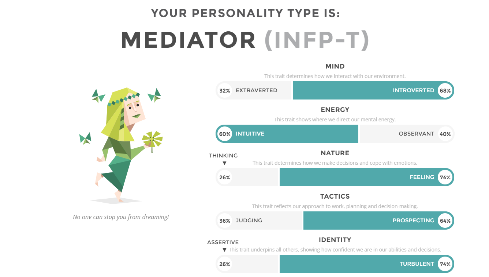
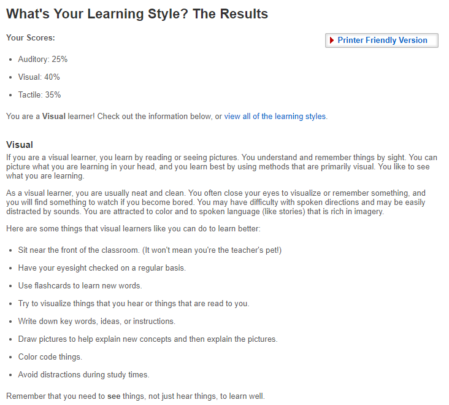

There are a number of online tests that are commonly used by employers to get specific
information about potential employees. One of the best-known of these is the Myers-Briggs
Type Indicator (MBTI) test, which was developed by the mother-and-daughter team of Isabel
Myers and Katharine Briggs. Another popular one (and very relevant to students) is about
learning styles. There are various other tests available online as well, and while there is no
guarantee that any specific test will be necessarily one that you will encounter in your career,
it seems highly likely that you will have to do some kind of test like this as part of a
recruitment process.
Accordingly, you are required to present the following information
The results of an online Myers-Briggs test.
The results of an online learning style test.
The results of one further online test of your choosing.
The third test should be distinct from both the Myers-Briggs test and the learning styles test.
This could be a Big Five Personality test, a creativity test, or a psychometric test. You should
be able to find something free, and please ensure that it is something that a potential
employer may find relevant (so please avoid things like a Nerdy Personality Attribute
assessment or a Generic Conspiracist Beliefs test!).
In addition to the results themselves, you should answer each of the questions below with one
paragraph.
What do the results of these tests mean for you?
How do you think these results may influence your behaviour in a team?
How should you take this into account when forming a team?


The results of these tests tell me how my thinking works and how I seem to operate to other people.
Other people may judge me for my creative thinking, however the thinking my deter other people from working with me.
This allows me to recognise how I can use my thinking to assist the team further and how to approach other people.
When forming a team, I should aim to find poeple who cover other aspects of thinking so we can cover all bases.